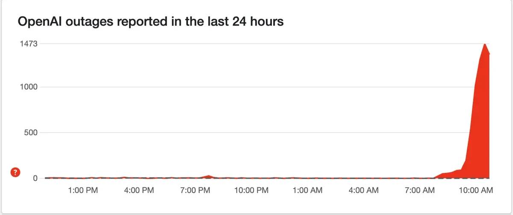
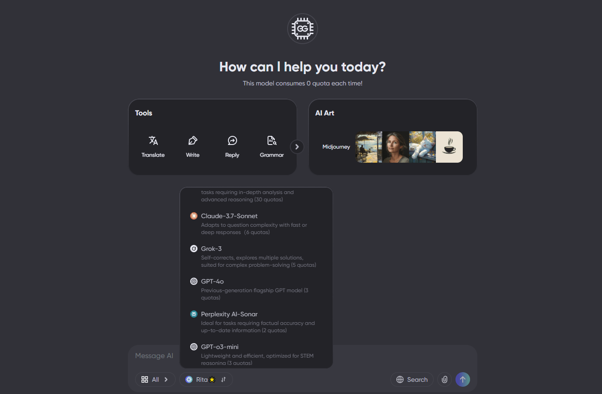
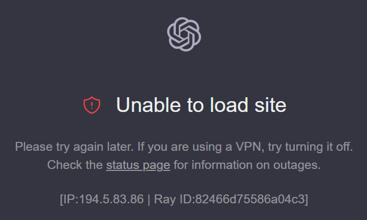
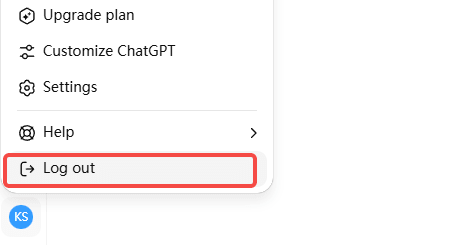
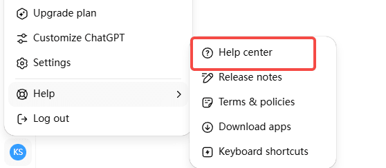

ChatGPT 故障：如何檢查並修復
過去幾年，ChatGPT 已成為無數人日常生活的一部分——用於寫作、編程和數據分析。每一次宕機都可能意味著計劃的延誤或靈感的中斷。
8月7日早上，我像往常一樣打開ChatGPT，卻看到了熟悉的錯誤頁面。這已經是今年下半年發生的第三次重大宕機事故了 —— 最嚴重的一次發生在6月10日，系統宕機了整整10個小時。
頻繁的服務中斷開始影響日常使用的穩定性。基於多次類似的經驗，我整理了一套故障排除和恢復方法，幫助你在下次出現問題時找到原因並更快地恢復正常。
ChatGPT Down 的快速解決方案
- 檢查網絡連接
- 清除瀏覽器緩存
- 切換到其他瀏覽器
- 註銷並重新登錄
- 禁用瀏覽器擴展
- 聯繫客戶支持
ChatGPT 為何關閉？
ChatGPT 剛上線時，偶爾出現服務中斷並不奇怪。畢竟，一個短時間內吸引海量用戶的全新產品需要時間來擴展其基礎設施。但到了 2025 年，OpenAI 已經是一家估值數百億美元的公司，甚至GPT-5 也已經發布，在25年底，他們也發布了最新的5.2模型，但是為什麼這些問題仍然如此頻繁地發生？
事實上，主要原因可以歸結為三類：
- 流量高峰 ：每當有重大新聞或新功能發布時，大量用戶湧入，服務器容量很快就會不堪重負。2024 年 6 月 4 日，GPT-4o 向免費用戶廣泛開放後不久，就發生了長達 4 小時的宕機。
- 基礎設施複雜性 ：與僅提供文本和圖像的傳統網站不同，大型 AI 模型依賴於龐大的 GPU 集群。管理這些資源比管理常規服務器複雜得多，單點故障就可能影響整個服務。
- AI 服務的獨特性 ：傳統軟件發生故障時，通常僅意味著一項功能停止運行。但對於 AI 模型而言，故障可能會導致不可預測的輸出。為了確保安全和穩定，服務提供商通常會在檢測到風險時選擇暫時關閉系統。從這個角度來看，一些"中斷"實際上是謹慎的、主動的關閉，旨在防止更大規模的錯誤或安全風險。
如何確定 ChatGPT 是否真的已關閉？
在嘗試修復此問題之前，最好先確認 ChatGPT 無法正常工作的原因。問題可能出在你這邊，也可能是服務器端故障。
最直接的方法是訪問OpenAI 的官方狀態頁面來查看服務狀態。該頁面使用不同的顏色來指示當前性能——紅色表示中斷，黃色表示性能下降。但請注意，此頁面上的更新可能會延遲，尤其是在事件發生的最初幾分鐘內。
為了獲得更及時的更新，你還可以查看Downdetector等第三方監控平台。這些平台會收集實時用戶報告，並以趨勢圖的形式呈現。以 6 月 10 日的宕機事件為例，當天報告數量在短時間內飆升至 1，400 多條，幾乎與問題爆發的時間完全吻合。
另一個可靠的信息來源是社交媒體。每當 ChatGPT 遇到問題時，X(以前稱為 Twitter)上的用戶幾乎都會立即開始討論。搜索" ChatGPT down "或" OpenAI "通常會顯示最新帖子。在 Reddit 上，OpenAI 社區也有許多用戶分享他們遇到的問題以及他們嘗試過的解決方案。
如果所有這些來源都確認問題普遍存在，那麼很可能是服務器端問題。在這種情況下，你所能做的就是耐心等待或切換到其他工具(我稍後會介紹)。另一方面，如果似乎只有你遇到了問題，那麼是時候檢查你的網絡連接、瀏覽器設置和其他本地因素了。
試用穩定且免費的 ChatGPT
如果你確認 ChatGPT 正在經歷大面積中斷，最好的解決方案是切換到穩定且免費的 ChatGPT。我個人使用的是 環球巴士，這是一個集成了多種高級模型的平台，包括 GPT-4o、GPT-4.5、Grok-4、Claude 4 Opus 和 DeepSeek R1。這些模型在寫作、數據分析和代碼生成等任務中都表現良好。
使用多模型平台的一個好處是，即使對於同一項任務，不同的模型也能提供不同的方法——有時這能幫助我發現以前從未考慮過的角度。環球巴士 還根據使用情況提供各種定價方案，使其比官方訂閱更靈活、更經濟實惠。
如果你不確定哪種模型最適合你的需求，可以查看我們對 AI 工具的詳細評測。我們比較了Perplexity、ChatGPT等熱門選項，以幫助你快速找到合適的解決方案。
如果 ChatGPT 無法正常工作，該怎麼辦
檢查網絡連接
如果確認問題出在你這邊， 你首先應該檢查你的網絡連接是否穩定 。ChatGPT 需要可靠且低延遲的連接，即使是輕微的波動也會影響其性能——即使其他網站加載正常。
在某些地區，互聯網服務提供商可能會限制或限制對 AI 服務的訪問，導致 ChatGPT 加載緩慢或行為異常。如果你使用的網絡(例如工作或學校)防火牆設置嚴格，ChatGPT 的訪問可能會被完全阻止。
在這種情況下，請嘗試使用穩定的 VPN 通過美國或歐洲的服務器進行連接。但是，請務必選擇可靠的 VPN 服務，因為不穩定的 VPN 連接實際上會使 ChatGPT 變得更慢。
清除瀏覽器緩存和 Cookie
排除網絡問題後，下一步是檢查瀏覽器緩存。瀏覽器會存儲圖片、腳本和 Cookie 等數據以加快加載速度，但過期或損壞的緩存文件可能會導致頁面無法正常運行。對於像 ChatGPT 這樣經常更新的網絡應用來說，舊緩存與最新版本之間的衝突是一個常見問題。
在 Chrome 中，你可以按 Ctrl+Shift+Delete ( 在 Mac 上按 Cmd+Shift+Delete )打開清除瀏覽數據菜單。選擇"緩存的圖片和文件"和"Cookie 和其他網站數據"，並將時間範圍設置為"過去 24 小時"。大多數其他主流瀏覽器的操作步驟類似。
清除緩存後，重新打開 ChatGPT——通常可以解決問題。 當頁面無法正常加載時，此方法尤其有效 。
切換到其他瀏覽器
如果清除緩存無法解決問題，請嘗試使用其他瀏覽器(例如 Firefox、Edge 或 Safari)訪問 ChatGPT。切換瀏覽器之前，最好關閉當前瀏覽器中所有無響應的 ChatGPT 會話，以免與帳戶會話數據發生衝突。
如果 ChatGPT 在其他瀏覽器中運行正常，你可以暫時繼續使用它，並等待後續更新修復該問題。但是，如果同一問題在多個瀏覽器中出現，則可能不是瀏覽器問題——你應該繼續檢查你的帳戶狀態或其他本地環境設置。
註銷並重新登錄
下一步是嘗試註銷然後重新登錄。這將刷新你的登錄狀態和權限設置。
登錄相關問題的發生頻率可能超出你的預期。尤其是在 OpenAI 更新服務器或調整用戶權限系統時，舊的登錄令牌可能會失效，但你的瀏覽器可能仍在嘗試使用它們。這可能會導致 ChatGPT 出現錯誤消息，或導致某些功能部分可用但不穩定。
點擊 ChatGPT 界面右下角的個人資料圖標，然後選擇" 註銷 "。然後重新輸入你的登錄憑據。如果你使用 Google 或 Microsoft 帳戶登錄，則可能需要重新授權訪問。
重新登錄後，系統將檢索你的最新權限和設置——這通常可以解決登錄狀態錯誤導致的問題。 如果 ChatGPT 加載成功，但你在嘗試發送消息時不斷遇到錯誤，此方法尤其有用 。
禁用擴展
很多情況下，ChatGPT 的問題實際上是由第三方瀏覽器擴展程序引起的。廣告攔截器、隱私工具，甚至一些看似無關的擴展程序都可能干擾 ChatGPT 的正常運行。
在 Chrome 中，你可以按 Ctrl+Shift+N ( 在 Mac 上按 Cmd+Shift+N )打開隱身窗口，然後嘗試訪問 ChatGPT。如果在隱身模式下一切正常，則問題可能出在你的某個擴展程序或某些瀏覽器設置上。
你可以逐個禁用擴展程序來識別罪魁禍首，或者簡單地繼續在隱身模式下使用 ChatGPT 作為臨時解決方法。
開關型號
如果你是付費用戶，當 GPT-5 出現問題時，你可以嘗試手動切換到 GPT-5 思維 模式。此模式通常比標準 GPT-5 更穩定，尤其是在處理長時間對話或複雜任務時。
更改很簡單：在聊天頁面左上角的模型選擇菜單中，點擊當前的 GPT-5 模型，選擇"GPT-5 Thinking"。切換後，刷新頁面重試。
這通常有助於緩解回復的暫時延遲或中斷。如果你還不是付費用戶，你可以以更實惠的價格在 環球巴士 上購買 ChatGPT Plus 帳戶，享受更穩定的對話體驗。
聯繫 OpenAI 支持
如果以上自助步驟均無效，你可能需要尋求官方支持。然而，OpenAI 的支持響應時間通常很慢，而且他們通常會先要求你重複上述相同的故障排除步驟。
前往 help.openai.com 並使用"聯繫我們"功能提交請求。付費用戶通常比免費用戶享有更高的優先級，但響應時間仍可能需要幾小時到幾天不等。
提交支持請求時，請務必清晰描述你的問題，包括問題的發生時間、你看到的任何錯誤消息以及你已嘗試過的故障排除步驟。這有助於避免泛泛而談的回復，並提高獲得有效解決方案的可能性。
結論
ChatGPT 已成為許多人日常工作和生活中必不可少的助手。當它出現故障時，往往會擾亂任務流程。希望本文提供的故障排除和解決方案能幫助你在遇到類似問題時快速找到原因並找到可行的策略。我會持續更新本指南，提供更有效的修復方案。
在眾多替代方案中，我最推薦的仍然是環球巴士。它集成了多種主流 AI 模型，能夠在 ChatGPT 出現故障或性能不佳時無縫切換，確保你的工作不間斷。其靈活的定價和高可用性使其特別適合處理突發問題。
同時，如果你考慮升級到 Plus 以獲得更高的穩定性，環球巴士提供了一種更實惠的方式，以更低的成本享受更流暢的體驗。
常問問題
為什麼 ChatGPT 今天無法使用？
最常見的原因是網絡連接不穩定。如果頁面長時間無法加載或顯示連接錯誤，請嘗試更改你的網絡環境，例如使用移動熱點、重啟路由器、調整 DNS 設置或切換到 VPN。
為什麼 ChatGPT 會給我一個錯誤？
在系統維護或更新期間，ChatGPT 可能無法正常運行並顯示錯誤。維護完成後，這些問題通常會自動解決。如果問題仍然存在，請嘗試清除瀏覽器緩存並重新登錄，以確保加載最新版本。
如果 ChatGPT 犯了錯誤會發生什麼？
ChatGPT 遇到錯誤時，可能無法發起對話或會話中途突然停止。你可能會看到登錄問題或消息發送失敗的消息，這意味著當前會話無法繼續。大多數情況下，刷新頁面、重新登錄或切換瀏覽器即可恢復正常功能。